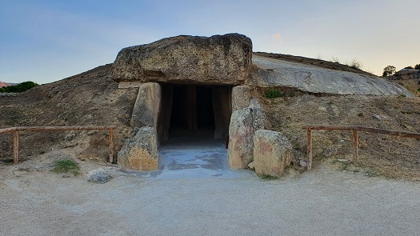
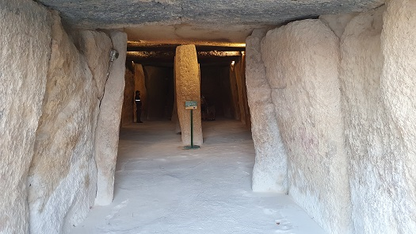
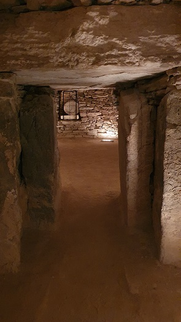
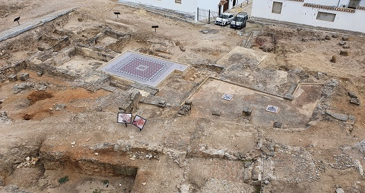
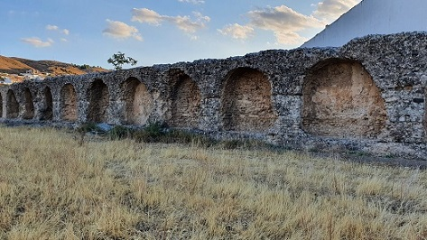
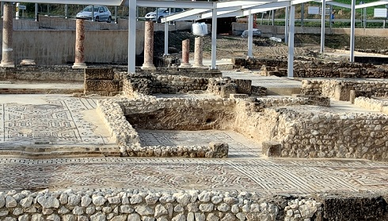
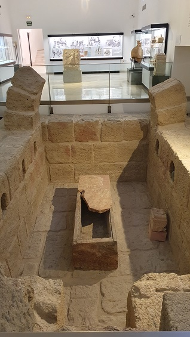

ANTEQUERA
Antequera poblada desde el 4º milenio a.e.c.
Destaca su conjunto de Dólmenes.
 |

 Conjunto Arqueológico Dólmenes
de Antequera: |
 |
En la actual ciudad de Antequera, la AntiKaria romana, destacamos las termas de santa Maria, siglo I-V. Fueron reformadas en el siglo III. En las estructuras pueden apreciarse los distintos ambientes termales característicos del mundo romano. En el sector central se aprecia una gran piscina de agua fría o natatio, con bancos adosados en las paredes que en su momento estuvo totalmente recubierta de mármol y pilastras adosadas con decoraciones vegetales, junto a ella aparece un gran mosaico central, hoy cubierto por motivos de conservación. El tema central lo constituye un ejemplo de representación mitológica: un busto de “Occanus”, divinidad acuática que aparece con todos sus atributos “pinzas y patas de cangrejo”, rodeado de temas geométricos, también policromos que emulan un ambiente de cubos en relieve. Sobre el recinto terma se construye un barrio en el siglo XV. las termas de descubrieron en 1988.
Las termas de Río de la villa, la llamada Carnicería de los Moros, se asocian a una suntuosa Villa suburbana. Se conserva la gran piscina de 12x53m, cuyo muro de contención está decorado con quince hornacinas de una altura media de 2’80 metros. Estos nichos son todos de planta rectangular, y se cubren con bóveda de medio cañón, con excepción del situado en el centro, que es de planta semicircular y se cubre con un cuarto de esfera. La construcción es de mortero. Puede que originariamente se cubriese todo con otro tipo de material. Resulta curioso el empleo, en los fondos de los nichos planos, de un tipo de aparejo muy interesante: se trata del llamado «opus espicatum» o «espina de pez», que denota una fecha bastante tardía, posiblemente a comienzos del siglo IV. La ocupación del yacimiento se extiende desde los siglos I-II hasta el siglo V. En cuanto a su función no está clara. Fueron descubiertas en 1984-85.
|
 |
 |
| Termas romanas de Santa Maria | Termas de Río de la villa |
También destaca la villa romana suburbana de la Estación, con una cronología del siglo I-V. Destacan sus grandes dimensiones, más de 20.000 metros cuadrados con tan sólo un 20% excavado. La vegetación y sobre todo el agua, son las protagonistas de esta villa, al encontrase presente en sus espacios más destacados: el peristilo, el corredor en rampa, la galería principal, el estanque del ninfeo, los baños privados con sauna y sus diferentes estancias calefactadas. La villa se recubrió en 1988.

Villa romana de la Estación
En el Arco de los Gigantes que Data del siglo XVI se pueden observar estatuas e inscripciones romanas.
En el museo, MVCA, destaca el
fragmento de sectile parietal elaborado con despiece de mármoles locales
y de importación, con la representación de un ave acuática, que formaba
parte de un zócalo decorativo de una de las estancias. El único que se
conserva en toda la Península Ibérica. También podemos visitar el
columbario de Acilia Plecusa, el Efebo de Antequera, mosaicos,....

Columbario de Acilia Plecusa
La Ciudad Romana de Singilia Barba, a unos 6km de la actual Antequera.
Se conserva el teatro, el circo, la cuidad, buena parte del foro y las
necrópolis con unos 15 columbarios, así como, los restos de un acueducto
que llevaba el agua desde la antigua Anticaria hasta Singilia.
También de época romana es la Ciudad de Aratispi. Datada en el siglo I
a.e.c. Con su muralla ibera, casas, tabernas y un molino de aceite.
La Villa romana de Cortijo Robledo datada en los siglos I-V, con una
extensión de unos 500m2. En la AP46. Una villa romana agrícola destinada
a la producción de aceite de oliva. Estaría vinculada a la cercana
ciudad romana de Aratispi.
Más info: https://www.turismoderonda.es
| MÁLAGA ROMANA | HISPANIA |